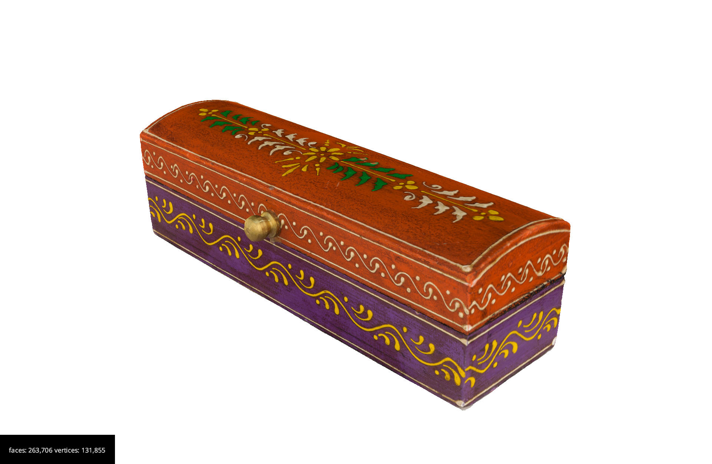
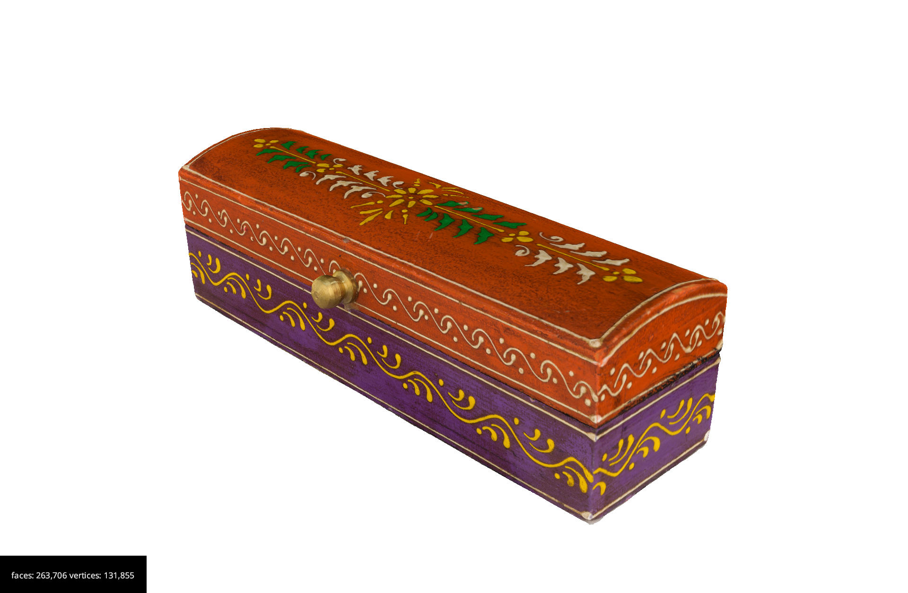

Undertsanding our 3D world
Figure 1
Charité University Hospital - Operating Room ©
Queisner M, Pogorzhelskiy M, Remde C, Pratschke J, Sauer IM. from Sketchfab
Figure 2

© REDPIXEL from AdobeStock
Structure from Motion
Figure 1
 Also known as photogrammetry.
Also known as photogrammetry.
Figure 2

Figure 3

Bernard de Go Mars under Public Domain © from
[Wikimedia] (https://commons.wikimedia.org/w/index.php?curid=25846)
Figure 4

Bernard de Go Mars under Public Domain © from
[Wikimedia] (https://commons.wikimedia.org/w/index.php?curid=25846)
Process Overview
Figure 1
Feature points in photograph of building © Lukas
Mach at English
Wikipedia
{kind=link}
Figure 2

Édifice Shaughnessy, 401-407, rue McGill,
Montréal © Jeangagnon at Wikimedia
{kind=link}
Figure 3
Vase by Jersey Glass Company of George Dummer
(MET, 20.48.1) © Metropolitan Museum of Art at Wikimedia
{kind=link}
Figure 4

Silver mugs created by Adrian Bancker
(1703-1772) between 1731-1750. Currently held by the Museum of the City
of New York. © Adrian Bancker at Wikimedia
{kind=link}
Figure 5

View of features matched by Metashape
photogrammetry software on a dataset of a coloured carboard box. Blue
lines display valid matches, and red lines display invalid
matches.
Figure 6

Figure 7

Software computes 3D points describing the scene
geometry © ZooFari in Wikimedia
Figure 8

Point cloud projected by images
Figure 9
Point cloud projected by images
Figure 10

Triangulated point cloud projected by
images
Figure 11

Zooming into the triangles of the 3D model
Creating 3D models via SfM
Figure 1

Depth-of-field
Figure 2

Best practice to photograph facades. DO NOT take
a panorama image of a facade. DO walk along the facade taking
overlapping pictures.
Figure 3

Best practice to photograph rooms or closed
spaces. DO NOT take various panorama images of the room. DO walk around
the room taking overlapping pictures.
Figure 4

Best practice to photograph objects. DO NOT take
pictures without overlap. DO walk around the object taking overlapping
pictures.
Figure 5

12 cm Marker under wooden horse object
Figure 6

Shadows created by the sunlight on Saint Viktor
of Xanten Church, Dülmen, North Rhine-Westphalia, Germany, Public
domain, Dietmar Rabich , under CC BY-SA 4.0,
via Wikimedia
Commons
{kind=link}
Figure 7
Overcast lighting on Statue of Queen Victoria,
Brighton
Figure 8
 {alt=“static camera”Before you
start}
{alt=“static camera”Before you
start}
Figure 9

Photo of setup without object.
Figure 10

Diffused box for static objecst
Figure 11

Balkan Heritage Field School (photogrammetry
course) at Stobi, Republic of Macedonia, Ivan.giogio, under CC BY-SA 4.0,
via Wikimedia
Commons
{kind=link}
Figure 12

As the visualisation shows, the digitial
photographs in this setup have a repetitive structure.
Figure 13

Static object / move camera
Figure 14

As the visualisation shows, the digitial
photographs in this setup are more organic, as the photographer moves
taking more or less pictures where required.
Software Workflow
Figure 1
Image from photogrammetry acquistion.
Figure 2
Example of image showing the mask which is
loaded into the software
Figure 3

Sparse point cloud generated by 3DFlow ZEPHYR
software
Figure 4

Dense point cloud generated by 3DFlow ZEPHYR
software
Figure 5

3D model generated by 3DFlow ZEPHYR
software
Figure 6
 

Technologies for sensing
Figure 1
Microchip board with sensor © Kadmy from
AdobeStock
Figure 2

Figure 3

Real-life motion data (left) is acquired on a
motion capture platform (center) and used to determine the posture of
the CHAD phantom (right) © Vazquez88
Figure 4

Two repetitions of a walking sequence recorded
using a motion-capture system. The spatial trajectories of limb
movements are highly similar despite of the timing of movement differing
between repetitions. Data are presented and analyzed in the paper
Simultaneous inference for misaligned multivariate functional data ©
Lars Lau Raket
Figure 5

Figure 6

Figure 7

Figure 8

Tracking in VR
Figure 1
Positional tracking in virtual reality ©
Ilsladkih at Wikimedia
{kind=link}
Figure 2

Pose estimation library from Google © Google
Figure 3

Pose estimation library from Tensor Flow © Tensor
Flow
Figure 4